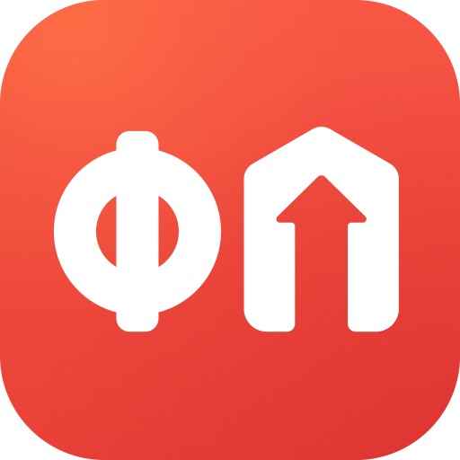

Твій фінансовий планкалькулятори в Telegram
Порахуйте своє фінансове майбутнє
Безкоштовно, без реєстрації, за 1–2 хвилини.
Порахувати в Telegram
Не відкривається? Натисніть ⋯ угорі й «Відкрити в браузері».
1
Натисніть ⋯ угорі справа
2
Оберіть «Відкрити в браузері»
Цей застосунок не відкриває Telegram сам. Немає такого пункту? і знайдіть у пошуку Telegram.